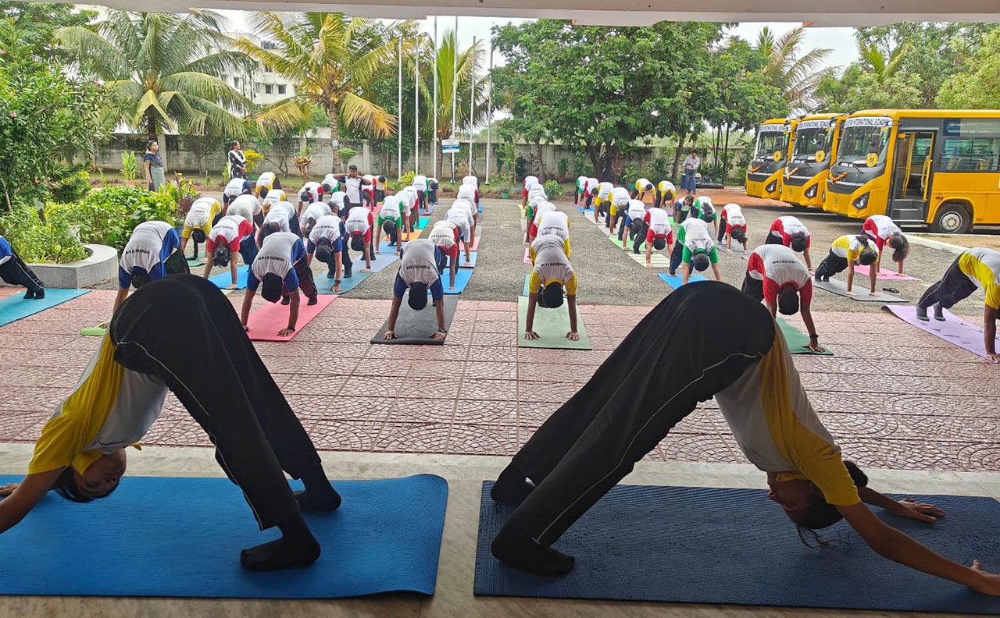

การออกกำลังกายและสมรรถภาพทางกาย
การออกกำลังกายเป็นกิจกรรมที่ร่างกายมีการเคลื่อนไหวและใช้กล้ามเนื้ออย่างเป็นระบบ โดยมีจุดประสงค์เพื่อเสริมสร้างสุขภาพและพัฒนาความสามารถในการทำกิจกรรมต่าง ๆ การออกกำลังกายมีบทบาทสำคัญต่อการทำงานของระบบหัวใจและหลอดเลือด ระบบหายใจ กล้ามเนื้อ และกระดูก นอกจากนี้ยังช่วยส่งเสริมสุขภาพจิต ลดความเครียด และทำให้รู้สึกผ่อนคลาย การออกกำลังกายอย่างเหมาะสมจึงเป็นส่วนหนึ่งของการสร้างเสริมสุขภาพและป้องกันปัญหาสุขภาพในอนาคต สมรรถภาพทางกายหมายถึงความสามารถของร่างกายในการทำกิจกรรมต่าง ๆ ได้อย่างมีประสิทธิภาพ โดยไม่เหนื่อยล้ามากเกินไป และยังมีพลังงานเหลือสำหรับกิจกรรมอื่น ๆ องค์ประกอบของสมรรถภาพทางกาย ได้แก่ ความแข็งแรงของกล้ามเนื้อ ความอดทนของกล้ามเนื้อ ความอดทนของระบบหัวใจและหลอดเลือด ความยืดหยุ่น และองค์ประกอบของร่างกาย การออกกำลังกายมีหลายรูปแบบ เช่น การเดินเร็ว การวิ่ง การปั่นจักรยาน การว่ายน้ำ และการเล่นกีฬา การเลือกกิจกรรมควรคำนึงถึงความเหมาะสมกับวัย ความสามารถ และความสนใจของแต่ละคน ก่อนออกกำลังกายควรอบอุ่นร่างกาย และหลังออกกำลังกายควรผ่อนคลายกล้ามเนื้อ รวมถึงพักผ่อนและดื่มน้ำอย่างเหมาะสม การออกกำลังกายเป็นประจำจะช่วยให้ร่างกายแข็งแรง มีความคล่องตัว และสามารถทำกิจกรรมในชีวิตประจำวันได้ดีขึ้น